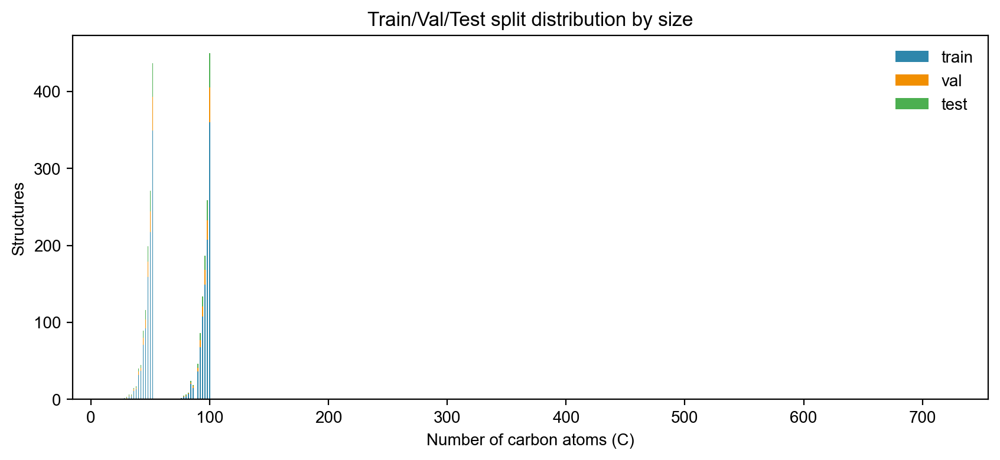
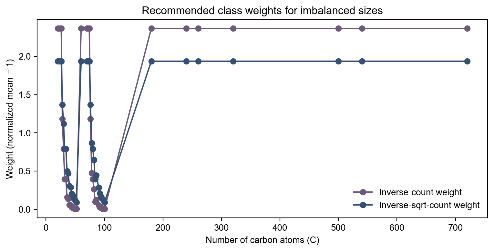

| C | # structures | weight_inv | weight_sqrt_inv |
|---|---|---|---|
| C20 | 1 | 2.364414 | 1.936378 |
| C24 | 1 | 2.364414 | 1.936378 |
| C26 | 1 | 2.364414 | 1.936378 |
| C60 | 1 | 2.364414 | 1.936378 |
| C70 | 1 | 2.364414 | 1.936378 |
| C72 | 1 | 2.364414 | 1.936378 |
| C74 | 1 | 2.364414 | 1.936378 |
| C180 | 1 | 2.364414 | 1.936378 |
| C240 | 1 | 2.364414 | 1.936378 |
| C260 | 1 | 2.364414 | 1.936378 |
split.csv: per-structure split assignmentsplit_summary_by_C.csv: split counts per Cweights_by_C.csv: recommended weights per Cweight_sqrt_inv as a loss weight to avoid over-amplifying tiny groups.